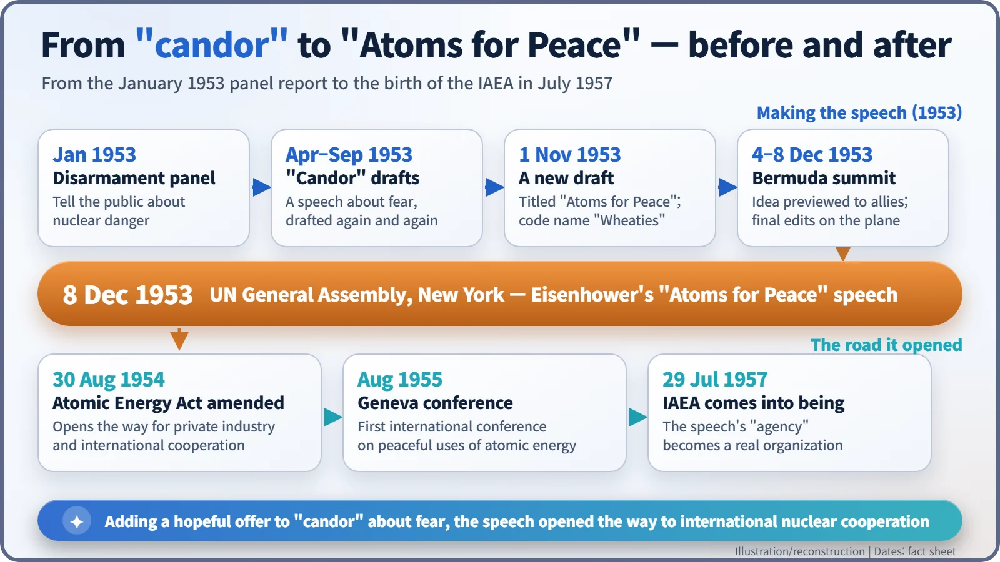
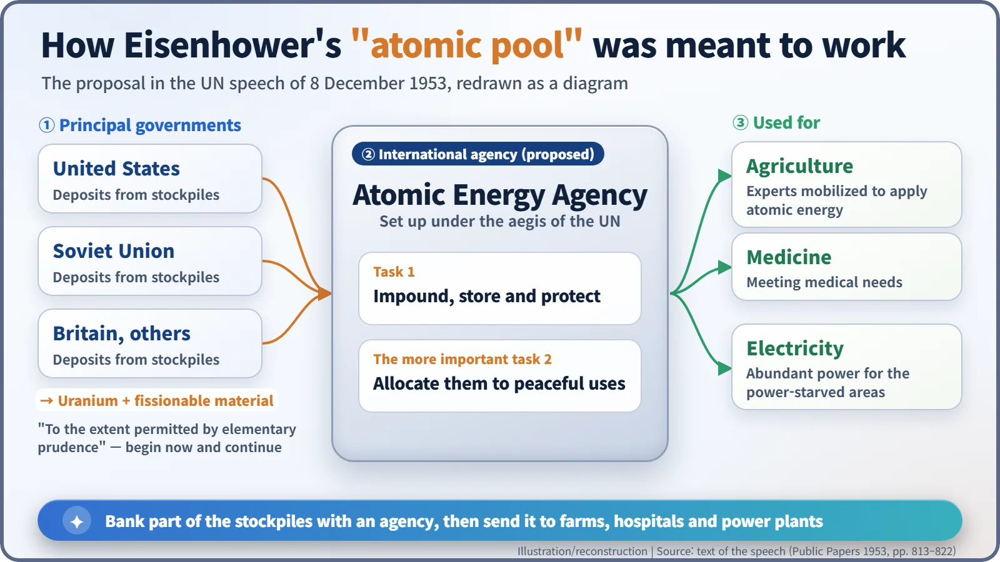
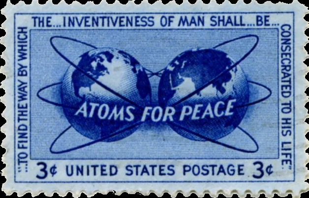

Nuclear History · 150
A Speech Code-Named After a Breakfast Cereal — Eisenhower's "Atoms for Peace" (8 December 1953)
A speech meant to tell people how frightened to be ended by proposing to bank bomb material for farms, hospitals and power plants.
On 8 December 1953, President Dwight D. Eisenhower told the UN General Assembly that nuclear weapons had become terrifyingly powerful, then proposed an "atomic pool": nations would deposit uranium and fissionable material with a new International Atomic Energy Agency, which would turn it to agriculture, medicine and electricity. Drafted over breakfast under the code name "Wheaties," the "Atoms for Peace" speech opened the road to international nuclear cooperation, though historians still argue over how much of it was hope and how much psychological strategy.
A speech named after a breakfast cereal
In the autumn of 1953, a box of breakfast cereal lent its name to a secret White House project. C. D. Jackson (1902–1964), President Eisenhower's adviser on psychological strategy, and Lewis L. Strauss (1896–1974), the new chairman of the Atomic Energy Commission, kept meeting over breakfast at a club in Washington. Fittingly, according to Eisenhower's own memoir, the project took the code name "Wheaties." What they were cooking up was read out at the United Nations General Assembly in New York on 8 December 1953: Dwight D. Eisenhower's (1890–1969) "Atoms for Peace" speech. [5]

The first brief was to tell people how frightened to be
In January 1953 a State Department panel of consultants on disarmament, chaired by J. Robert Oppenheimer, recommended that the government be far more candid with the public about how dangerous nuclear weapons had become. The case was hard to argue with. In November 1952 the first US thermonuclear test had yielded about 10.4 megatons, and in August 1953 the Soviet Union set off a thermonuclear device of its own. The American monopoly was gone and the weapons were only getting bigger.
From early April, drafts of a speech circulated under the name "Candor," and many were written through September. The problem was that a speech made only of horrors would leave listeners with nothing but despair. The answer was to describe the danger honestly and then offer something concrete. Strauss supplied more and more ideas for an "atomic pool," Jackson put them into words, and a first draft titled "Atoms for Peace" was dated 1 November. [4]
Bermuda, and a rewrite in mid-air
From 4 to 8 December, Eisenhower met Britain's Prime Minister Winston Churchill and France's Prime Minister Joseph Laniel in Bermuda. When he previewed the atomic pool idea, the record shows, Laniel approved entirely while Churchill said he would like to think it over.
On 8 December, aboard the presidential aircraft Columbine on the way to New York, Eisenhower reworked the text with Strauss, Secretary of State John Foster Dulles and Jackson. As Eisenhower later recalled, "only minutes before delivery of the speech, the work was done." Late that afternoon he stood before the General Assembly. [3]
The first half was genuinely frightening
The opening was "candor" in its purest form. "Atomic bombs today are more than 25 times as powerful as the weapons with which the atomic age dawned," Eisenhower said. The US stockpile, which "of course, increases daily," exceeded "by many times" the explosive equivalent of all the bombs and shells fired in every theatre in all the years of the Second World War. A single air group, he added, could now deliver a cargo more destructive than all the bombs that fell on Britain during the war. Left there, he warned, the world would be resigned to a future in which "two atomic colossi are doomed malevolently to eye each other indefinitely across a trembling world." [2]
Then he turned. "It is not enough to take this weapon out of the hands of the soldiers. It must be put into the hands of those who will know how to strip its military casing and adapt it to the arts of peace."
The heart of the offer: a shared atomic bank
The proposal itself was short. "The Governments principally involved, to the extent permitted by elementary prudence," should "begin now and continue to make joint contributions from their stockpiles of normal uranium and fissionable materials" (uranium-235 and plutonium, which can sustain a chain reaction) "to an International Atomic Energy Agency," to be set up under the aegis of the United Nations. The agency would be responsible for "the impounding, storage, and protection" of what was deposited. Its more important job would be to work out how to allocate the material to peaceful uses: "the needs of agriculture, medicine and other peaceful activities," and, as "a special purpose," "abundant electrical energy in the power-starved areas of the world." [2]
Think of it as a joint bank account for atoms. Every kilogram paid into it is a kilogram that cannot go into a bomb. Comprehensive disarmament talks were stuck, so the idea was to start with small deposits and build trust from there.

The speech ended with a pledge to find "the way by which the miraculous inventiveness of man shall not be dedicated to his death, but consecrated to his life." The biblical image of beating swords into ploughshares (Isaiah 2:4) is often attached to the speech, but those words do not appear in it. [1]
A cool reply from Moscow, and a divided verdict
At the UN, the Soviet delegate, Malik, said he had no objection but also no instructions. In Moscow the press at first printed only a factual summary, and the US ambassador, Charles Bohlen, reported a "cool and skeptical" tone. The Soviet Union later agreed to talk but insisted that a pledge not to use nuclear weapons should come first. [3]
Historians still disagree about what the speech was. For some it is the opening sentence of the peaceful use of nuclear energy and of international cooperation on it. Others, such as the historian Ira Chernus, read it as psychological warfare, a form of "emotion management" designed to tame public fear. The numbers give the critics material: depending on the count, the US arsenal grew from about a thousand weapons to around twenty thousand during Eisenhower's presidency. Some researchers also argue that exporting research reactors and fuel lowered the threshold for proliferation. [6]
A sentence on a stamp
The speech nevertheless opened a road. The US Atomic Energy Act was amended on 30 August 1954, opening the door to private industry and international cooperation. In August 1955 Geneva hosted the first international conference on the peaceful uses of atomic energy, and on 29 July 1957 the "agency" of the speech became a real organization, the International Atomic Energy Agency (IAEA). [1]
On 28 July 1955 the US Post Office issued a 3-cent "Atoms for Peace" stamp whose border carries the speech's closing words in shortened form. A decade in which the atom swung between control and competition thus ended by putting a third strand, peaceful use, on the world stage.
